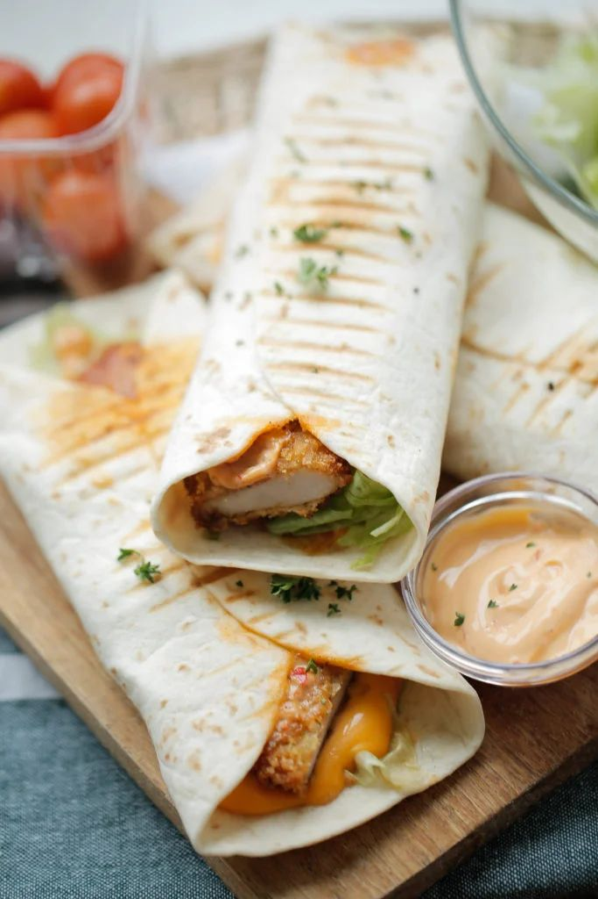

Wraps met kip en groenten
Bron: allerhande.nl
Beschrijving
Deze wraps met kip en groenten zijn snel klaar, gezond en superlekker. Perfect voor de lunch of een makkelijke avondmaaltijd.

Ingrediënten
- 2 middelgrote wraps
- 200 g kipfilet, in stukjes
- 1 paprika, in reepjes
- 1 kleine ui, in halve ringen
- 1 handje sla of spinazie
- 2 eetlepels maïs (optioneel)
- 2 eetlepels yoghurt of knoflooksaus
- 1 theelepel paprikapoeder
- Zout en peper naar smaak
- Olie om te bakken
Instructies
- Verhit olie in een pan en bak de kip goudbruin met paprikapoeder, zout en peper.
- Voeg de paprika en ui toe en bak nog 3–5 minuten mee.
- Verwarm de wraps kort in een droge pan of magnetron.
- Smeer de wraps in met yoghurt of knoflooksaus en beleg met sla, kip en groenten.
- Rol de wraps op en snijd ze eventueel doormidden. Serveer direct!